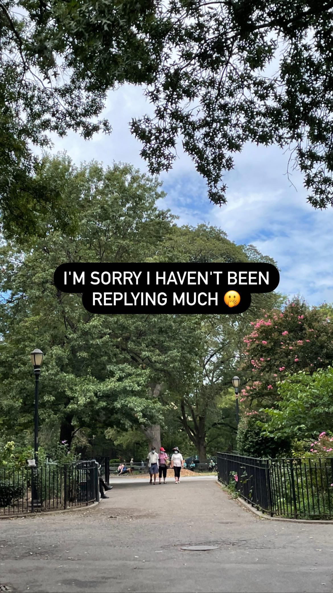
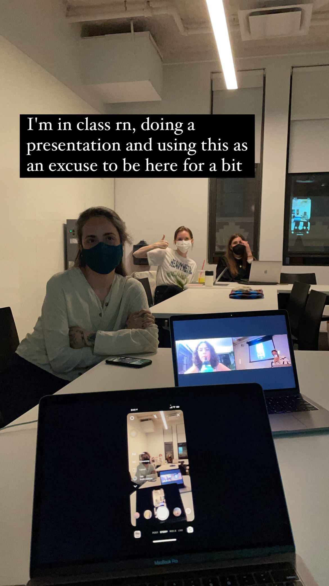
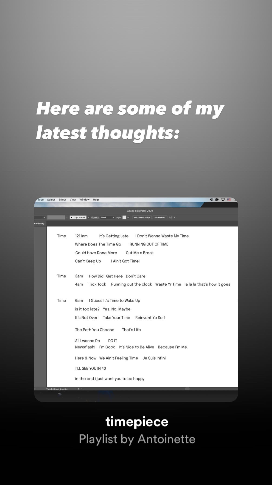
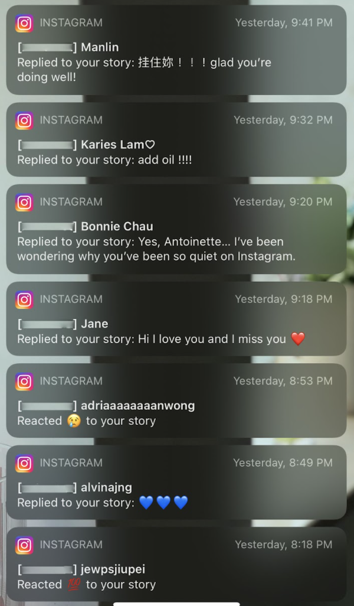

We were tasked to write and design a 150-word personal manifesto that exists digitally and articulates our motives in pursuing Parson's MPS CD program and our thinking around communication design within our context.
Taught by Luiza Dale ↗




I projected my phone screen and posted these stories on instagram as I presented my manifesto in class.